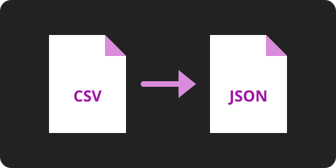

Freevertio: conversor de arquivos
A versão piorada do Convertio. Converta imagens e arquivos de dados direto no navegador, sem enviar nada para um servidor.
Conversor
Formatos aceitos: JPG, PNG, WEBP, CSV, JSON e TXT.
Arquivo detectado:
Formato detectado:
Sua biblioteca de arquivos
Em breve você poderá criar uma conta para guardar os arquivos que converteu e baixá-los de novo quando quiser.
